La más
grande
del sur
La Academia también late en la Patagonia. Desde Trelew organizamos cada viaje a ver a Racing, gestionamos las entradas y vivimos juntos cada partido. Somos el sur académico.

Noticias y novedades oficiales
Información institucional, fútbol, comunicados y el resto de las disciplinas se publican en el sitio oficial del club. Desde esta filial podés entrar cuando quieras a ver las novedades.
Estadísticas oficiales
Aquí cargamos la página del club con el detalle estadístico del plantel profesional. Es el mismo contenido que en casa madre.
Racing Pass
Racing Pass es el portal web oficial del club (pass.racingclub.com.ar) para socios activos registrados en Avellaneda. Ahí las gestiones con la institución madre las hace cada persona con su cuenta, sin pasar por la filial.
Las cenas, viajes e inscripciones de socios filiales siguen gestionándose desde la Filial Trelew (WhatsApp · sección Socios).
Qué podés hacer en Racing Pass
Las funciones pueden ampliarse o ajustarse según lo que publique el club; típicamente el portal permite:
- Cuotas y cuenta corriente · consultas, medios de pago y estado de tus cuotas sociales.
- Carnet digital de socio · credencial en el celular donde el club disponga mostrarla.
- Entradas y accesos · cuando el club abre ventanas de compra para titulares, según disponibilidad y normativa vigente.
- Abonos y plateas · información y adhesión cuando están habilitadas las campañas del club.
- Datos personales · actualización de contacto y domicilio según permita el alta online.
- Beneficios · accesos a promociones o partners que eventualmente cargue institucional Racing.
- Información institucional · novedades y avisos oficiales vinculados a la condición de socio.
Historia del escudo
Resumen profesional tomado del material oficial sobre el símbolo de identidad más reconocido del club.
Los textos de esta sección son una síntesis informativa sobre la historia del escudo conforme lo publicado por Racing Club. La marca y el blasón oficial son titularidad exclusiva del club.
Los orígenes
Desde la fundación, el club utilizó símbolos para identificar la documentación oficial. En el libro de actas inicial figuran páginas selladas con un escudo laureado que contiene una pelota de la época y la leyenda «Foot Ball Racing Club – Barracas al Sud» (nombre de la actual Avellaneda hasta 1904). Ese sello cuenta como el primer signo de identidad documentado.
En torno a 1912 la correspondencia oficial muestra variantes equivalentes —con otros laureles— y la inscripción «Racing Foot Ball Club - Avellaneda». A lo largo de la década de 1910 aparecen también monogramas RC entrelazados en la Sede Social de Avellaneda; varios sobreviven incorporados en la arquitectura del edificio.
Primer «escudo» reconocido (1929) y años 30–40
Hacia 1929 se documenta oficialmente el primer blasón habitualmente denominado primer escudo: remite a la ciudad de Avellaneda y el nombre completo Racing Club, con bastones celestes y blancos y ornamental circundante, en membretadas y carnets hasta aproximadamente 1934.
Ya a mediados de los años 30 evoluciona hacia una forma cercana al diseño actual: escudo conocido como lo entendemos hoy, inicialmente más ornamentado. En cubiertas de prensa y anuarios de la década de 1940 se consolidan variantes muy similares a la insignia institucional vigente durante décadas posteriores.
Evolución 1950–2007 · Intercontinental y centenario
Las décadas siguientes trajeron variantes coherentes con el estatuto, matizadas por el estilo gráfico de cada época. En 1950 se adaptó el modelo al nuevo estadio sobre el mástil, incluso usando las iniciales «R.C» en lugar de «Racing» según esa aplicación puntual.
En 2001 llegó una de las revisiones más recordadas para la marca deportiva popular; dos años después se sumaron laureles y leyendas del centenario. Para 2007 una estrella superior conmemora el cuarentenario de la copa Intercontinental.
Nuestra identidad (2009) y nueva imagen (2014)
Desde 2009 Racing ajustó proporciones formales para alinearlas con ratios del estatuto (incluyendo igualdad de tamaño entre las siete franjas), fijó un celeste oficial y lo incorporó al manual corporativo inicial.
Finales de 2013–2014 trajeron una actualización desarrollada internamente pensando mayor impacto en camiseta, instalaciones y producto licenciado, manteniendo la esencia institucional del escudo contemporáneo.
¿Qué dice el estatuto?
El distintivo social será un escudo rectangular vertical (relación 3 : 2,5), borde superior y laterales rectos, base truncada por dos curvas que se encuentran formando un pico inferior. Campo superior azul-celeste con la palabra Racing; debajo, siete franjas verticales celestes y blancas alternadas (cuatro celestes, tres blancas, celestes en los extremos). Los filetes intermedios llevan línea divisoria oscura conforme texto legal completo disponible en el sitio oficial.
Articulación resumida a partir del capítulo institucional publicado por el club sobre el escudo. Consultá siempre la redacción definitiva legal ante necesidades jurídicas o de licencias.
Evolución gráfica del escudo
Las mismas fichas cronológicas que en racingclub.com.ar/escudo: cada escudo está en assets/evolucion-escudo/[año].png más vigente.png. Tocando una tarjeta abrís la historia oficial completa.
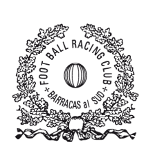
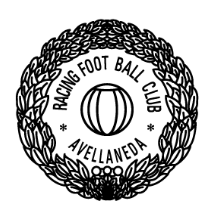
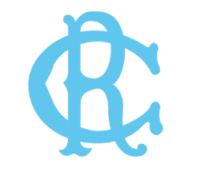
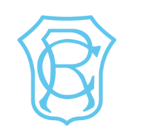
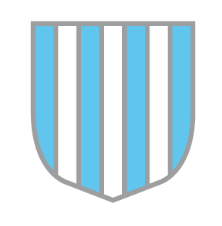
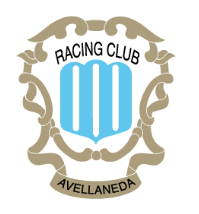
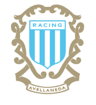
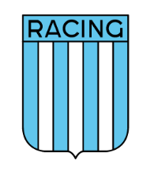
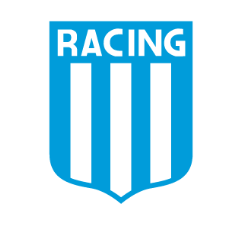
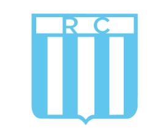
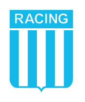
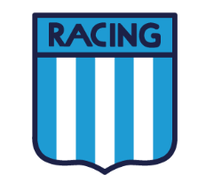
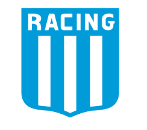
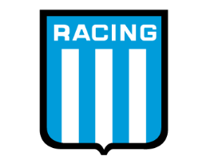
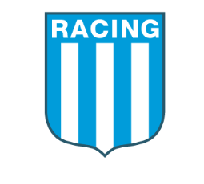
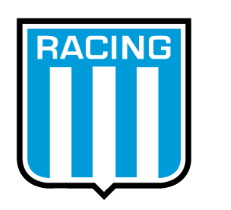
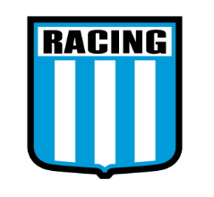
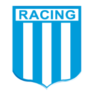
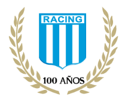
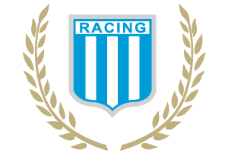
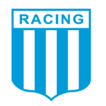
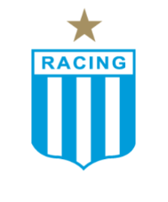
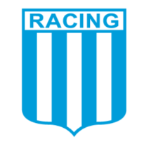
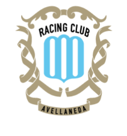
Vigente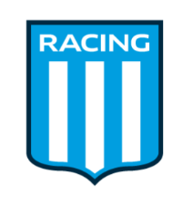
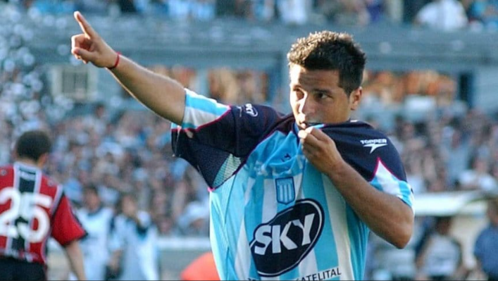
{kind=link}
{kind=link}
{kind=link}
El ídolo que
nos da el nombre
La Filial lleva el nombre de Carlos Maximiliano "Chanchi" Estévez, padrino de la filial y uno de los ídolos más queridos de la historia de Racing Club. Surgido de las inferiores académicas, fue la figura del Torneo Apertura 2001 — campeón bajo la conducción de Reinaldo "Mostaza" Merlo. Goleador, pícaro y escurridizo, Chanchi es un símbolo indiscutido de La Academia.
- Apertura 2001
- Campeón con Racing · 7 goles
- Rol en la filial
- Padrino de la Filial Trelew-Chubut
- Debut en Racing
- 17 de febrero de 1998
- Posición
- Delantero
Fuente: racingclub.com.ar/idolos
Nuestra Galería
Reviví los mejores momentos del Cilindro, los viajes desde la Patagonia, las cenas de la filial y el color de nuestra hinchada en un archivo visual ordenado.
Más de 40 imágenes y videos históricos de la Filial Chanchi Estévez.
Momentos del Cilindro, la hinchada y la comunidad celeste en Trelew. Pasá el cursor sobre cada foto para agrandarla con foco y pulsá Descargar si querés guardarla.
{kind=link}
{kind=link}
{kind=link}
{kind=link}
{kind=link}
{kind=link}
{kind=link}
{kind=link}
{kind=link}
{kind=link}
{kind=link}
{kind=link}
{kind=link}
{kind=link}
{kind=link}
{kind=link}
{kind=link}
{kind=link}
{kind=link}
{kind=link}
{kind=link}
{kind=link}
{kind=link}
{kind=link}
{kind=link}
{kind=link}
{kind=link}
{kind=link}
{kind=link}
{kind=link}
{kind=link}
{kind=link}
{kind=link}
{kind=link}
{kind=link}
{kind=link}
{kind=link}
{kind=link}
{kind=link}
{kind=link}
{kind=link}
{kind=link}
{kind=link}
{kind=link}
{kind=link}
{kind=link}
{kind=link}
{kind=link}
{kind=link}
{kind=link}
{kind=link}
Viajes de la Filial
Racing en el Cilindro
Viaje organizado desde Trelew para ver a Racing en el Estadio Presidente Perón.
Aplicación Interactiva de la Filial
Reservas de Viajes y Gestión de Socios
Desarrollamos nuestra propia plataforma digital para que puedas asegurar tu lugar en los micros al Cilindro de manera rápida, ver contadores en tiempo real, consultar los valores actualizados y enviar tu reserva directo por WhatsApp sin vueltas.
Próximamente la app sumará el club de beneficios locales, carnet digital de socio de la filial y autogestión exclusiva para la comunidad académica de la Patagonia.
También podés escribirnos directo por WhatsApp · +54 280 458-8309
Lo'cademia
Camisetas, indumentaria y merchandising oficial de Racing. Delivery a toda la Patagonia.
Ir a Lo'cademia · racingclub.com.arContacto
Racing Club Filial Trelew · Chanchi Estévez · Patagonia Argentina
Sede
Trelew, Chubut · Patagonia Argentina
WhatsApp Filial
+54 280 458-8309La más grande del Sur
Colectivo, entradas, Predio Tita y la pasión de Racing desde Trelew. La Filial Chanchi Estévez une a la Academia en la Patagonia.
Escribinos por WhatsApp